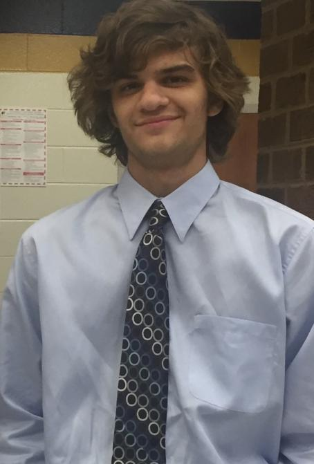

About Me
I'm Zander Hesch, a third-year Mathematics and Computer Science student at the University of Richmond. I've been passionate about Computer Science since I was young, being very interested in how the technology around me works and developing my interests using hobbies like video games as inspiration. My first exposure to programming was using Scratch in 5th grade, and ever since then I've never lost my passion for coding and Computer Science. More details of my experience can be found in my resume linked below. If you want to contact me, please view my information on the Contacts page.